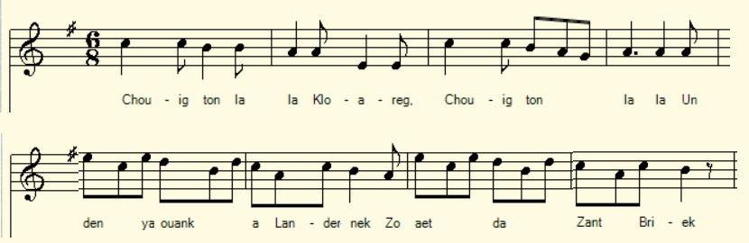

Chants contre le français
Sonioù a-enep ar Galleg
Songs against the French language
Chant tiré du 3ème Carnet de collecte de La Villemarqué (p. 14).
Mélodie
Arrangement Christian Souchon (c) 2021
|
A propos de la mélodie Inconnue. Cependant le refrain "Chouig ton la la. Chouig, chouig la la" évoque les onomatopées caractéristiques des berceuses: "Toutouig lala". Ce qui suggère d'utiliser la mélodie de la berceuse dont c'est le titre. A propos du texte Malgré le pluriel "chants", ces dix vers ne sont suivis d'aucun autre chant. |
About the melody Unknown. However, the refrain "Chouig ton la la. Chouig, chouig la la" evokes the characteristic onomatopoeias of Breton lullabies: "Toutouig lala". This suggests using the homonymous melody. About the text Despite the plural "chants", these ten lines are not followed by any other song. |
Chants contre le français - Carnet N°3, p. 14
|
p. 14 1. Un den yaouank a Landerneg Zo aet da Zant Brieg Diskan Chouig ton la la, Chouik ton la la Chouig, chouig la la 2. Lakaet e oa [da gloareg?] - Na evit deskiñ ar galleg. 3. Pa oa degouet e Sant Brieg A oa bet ruinet ar galleg. 4. A oa staget ouzh e doull Ur c'hozh tamm paper skritur moul... KLT gant Christian Souchon (c) 2021 |
p. 14 1. Un jeune homme de "Landerneuc" Un jour s'en fut à Saint-Brieuc. Refrain Chouig ton la la, Chouig ton la la Chouig, chouig la la 2. Si du jeune homme un clerc (?] on fait C'est pour qu'il sache le français. 3. Quand à Saint-Brieuc il s'en vint De son français ne restait rien. 4. D'autre, qu'à son c... attaché Un bout de papier imprimé... Traduction Christian Souchon (c) 2021 |
p. 14 1. A young man born in "Landerneuc" Once had to leave for Saint-Brieuc. Chorus Chouig ton la la, chouig ton la la Chouig, chouig la la 2. One makes a clerk (?) of a young wretch When one wants him to study French. 3. When he turned up in Saint-Brieuc His French it had become a wreck, 4. A printed page to his a... hole, Stuck, a bit of it, not the whole ... Translation: Christian Souchon (c) 2021 |
NOTES
|
[1] On parlait breton à Landerneau (appelé ici "Landernec" au lieu de "Landerne" pour la rime ?) et français à Saint-Brieuc. Un long voyage qui nécessitait qu'on emportât avec soi quelques gazettes à usage hygiénique; Le breton étant rarement imprimé, le français était en mauvaise posture. [2] La Villemarqué ne donne habituellement pas dans la scatologie. Pourtant, cinq pages plus loin on trouve cet autre texte qu'on excusera au motif qu'il s'agit du sermon d'un ecclésiastique (cf. aussi Komodite): |
Manifestation de soutien à "Diwan", 13.03.2021 |
[1] They spoke Breton in Landerneau (here referred to as "Landernec" instead of "Landerne" for the sake of the rhyme?) and French in Saint-Brieuc. A long journey requiring some gazettes to be carried along for hygienic use; Since Breton was rarely printed, French was in jeopardy. [2] La Villemarqué does not usually indulge in scatology. However, five pages later we find this other text that we should excuse on the grounds that it is the sermon of a clergyman (see also Komodite). |
Sermon de M. Pape, vicaire perpétuel de St Jean-du-Doigt,
qui ne préchait jamais. Profitant de labsence des vicaires et curés il monte en chaire et dit:
Sermon by M. Pape, perpetual vicar of St Jean-du-Doigt
who never preached. Taking advantage of the absence of the vicars and priests he took the pulpit and said:
|
Bandenn moch! Konsiañs ho-peuz mont da kachet en hent tre pehini an Aotrou Kergrist ha me e teuomp dan iliz? An Aotrou Kergrist a zo dall, paour-kaezh kozh! a lamm e-barzh ; plouf! Me na vennan ket o sellet war-benn an nech o laret breviel, hag e lamman e-barzh, plouf! ha n'it ket da laret: "n'eo ket Aotrou!" rak anaet eo ho koch: Ni oar awalch piv a zebr amañ bara gwenn pe bara torzh! Evelzé bezet graet (demander à Mr Le Clech les conclusions). |
Bande de cochons! Avez-vous conscience que vous soulagez vos flancs sur la route par laquelle M. Kergrist et moi, nous nous rendons à léglise? M. Kergrist et moi. Lui est aveugle, le pauvre vieux, et il saute dedans : plouf ! Et moi, sans prêter attention, je regarde en lair en lisant mon bréviaire et je tombe dedans: plouf! Et nallez pas dire; « Ce nest pas vrai, Monsieur le vicaire » Car on reconnaît votre ... trace. On sait bien ici qui mange du pain blanc ou du pain noir en miche. Ainsi soit-il (Demander à Mr Le Clech les conclusions). |
Bunch of pigs! Are you aware that you've got used to relieving your bowels on the road by which the Reverend Kergrist and I usually go to church? Reverend Kergrist and I. He is blind, the poor old man, and he steps in: sploosh! And I, without paying attention, I look up while reading my breviary and I step in as well: sploosh! And don't tell me; "That's not true, sir" Because we can tell you by your ... droppings. We know here who eats white bread and who eats black bread in a loaf. Amen! (Ask Mr Le Clec'h for the conclusions) |